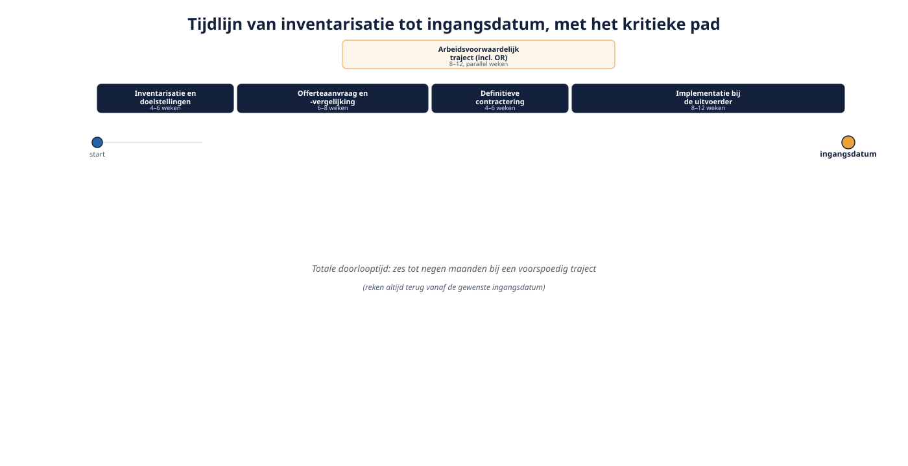

Deel 14 — Offerte, acceptatie en contract
Niveau 2 · Uitvoering en advies · Deelnemersreader
14.1 Leerdoelen
Na dit deel kun je:
- de fasen van het offerteproces benoemen, van inventarisatie tot ondertekend contract;
- beschrijven welke gegevens een uitvoerder nodig heeft om een offerte te kunnen maken;
- het onderscheid maken tussen collectieve en individuele acceptatie, en uitleggen wanneer een medische waarborg nodig is;
- de verplichte onderdelen van een uitvoeringsovereenkomst herkennen in een concept-contract;
- het kritieke pad van een contractering inschatten en vertalen naar een planning;
- het volledige proces toepassen op de contractvernieuwing van Van Doorn Techniek.
14.2 Waarom dit deel hier staat
Deel 2 introduceerde de uitvoeringsovereenkomst als document. De delen 11 tot en met 13 vulden in wát er in die overeenkomst komt te staan: premiepercentage, product, lifecycle, uitkeringsvorm. Dit deel behandelt het proces waarmee dat allemaal daadwerkelijk op papier komt te staan — van het eerste gesprek tot de handtekening.
Dit is geen bijzaak. Een technisch uitstekend advies dat vastloopt in een te krap ingepland contractproces, levert een werkgever niets op. De meeste vertraging in transitietrajecten (deel 15) ontstaat niet in de inhoudelijke keuzes maar in dit proces.
14.3 De inventarisatiefase
Voordat een uitvoerder een offerte kan maken, heeft hij gegevens nodig:
- Deelnemersbestand — leeftijden, salarissen, deeltijdfactoren, geslacht (relevant voor de prijsstelling van risicodekkingen), burgerlijke staat waar relevant voor het nabestaandenpensioen.
- De huidige regeling — het bestaande reglement en de uitvoeringsovereenkomst (deel 2), zodat de nieuwe uitvoerder weet wat er wordt overgenomen, gewijzigd of achtergelaten.
- De doelstellingen van de werkgever — premieniveau, wel of geen eerbiedigende werking (deel 6), ambitie voor het nabestaandenpensioen, risicobereidheid voor de lifecycle (deel 12).
- De uitkomst van de werkingssfeertoets (deel 4) — een uitvoerder mag en kan geen offerte maken voor een werkgever die feitelijk verplicht is aangesloten bij een bedrijfstakpensioenfonds.
Datakwaliteit is hier al een aandachtspunt, niet pas bij de implementatie (deel 19). Een offerte gebaseerd op een verouderd of onvolledig deelnemersbestand leidt tot een premie die bij de daadwerkelijke aanlevering weer moet worden herzien — met vertraging tot gevolg.
14.4 De offerteaanvraag
Hoeveel aanbieders? Voor een adviesdossier dat zorgplicht serieus neemt (deel 18), is een vergelijking tussen meerdere uitvoerders gebruikelijk — niet omdat er een wettelijk minimum is, maar omdat een advies zonder vergelijkingsmateriaal moeilijk te onderbouwen is.
Wat een offerte moet bevatten, gebruik de achtpuntenlijst uit deel 12 als checklist:
- premiepercentage en -structuur;
- lifecycle-aanbod en standaardprofiel;
- TER per fonds;
- poliskosten;
- risicodekkingen — dekkingspercentages en of zij apart of verdisconteerd zijn;
- garantieniveau;
- keuzevrijheid en keuzebegeleiding;
- contractvoorwaarden — looptijd, opzegtermijn, afwikkeling bij beëindiging (deel 2).
Een offerte is nog geen contract. Zij is een voorstel onder voorbehoud van acceptatie (zie 14.5) en van definitieve, gecontroleerde bestandsgegevens. Communiceer dit voorbehoud expliciet naar de werkgever — een voorlopige premie die later wijzigt, is geen fout van de uitvoerder maar een normale stap in het proces, mits vooraf aangekondigd.
14.5 Acceptatie: collectief en individueel
Collectieve acceptatie. Voor de reguliere pensioenopbouw (ouderdomspensioen) geldt bij een nieuwe regeling doorgaans automatische, collectieve acceptatie van het gehele bestand: er wordt geen individuele gezondheidstoets gedaan. Dat past bij het karakter van een arbeidsvoorwaarde die voor iedereen geldt.
Individuele beoordeling bij risicodekkingen. Voor bepaalde risicocomponenten — met name een hoge arbeidsongeschiktheidsdekking of een uitgebreide excedentregeling boven een bepaalde drempel — kan een uitvoerder een individuele gezondheidsverklaring of medische keuring verlangen, vooral voor nieuwe deelnemers of bij een aanzienlijke verhoging van een bestaande dekking.
De waarborg bij overstap naar een nieuwe uitvoerder — het kernpunt van dit onderdeel. Wanneer een werkgever van uitvoerder wisselt (zoals Van Doorn mogelijk doet bij de transitie), rijst een cruciale vraag: moeten de zittende medewerkers opnieuw medisch worden beoordeeld voor hun risicodekkingen bij de nieuwe uitvoerder? Zonder nadere afspraak zou dat kunnen betekenen dat een medewerker die inmiddels gezondheidsklachten heeft ontwikkeld, bij de nieuwe uitvoerder een lagere dekking krijgt of tegen een hogere premie wordt geaccepteerd — puur omdat de werkgever van uitvoerder wisselt, iets waar de medewerker part noch deel aan heeft.
Om dit te voorkomen, wordt in de praktijk vaak een waarborg zonder nader medisch onderzoek overeengekomen: de nieuwe uitvoerder accepteert de zittende deelnemers voor hun bestaande dekkingsniveau, zonder aanvullende keuring, als voorwaarde bij het aangaan van het nieuwe contract. Dit moet je als adviseur expliciet bedingen — het gebeurt niet vanzelf, en het is precies het soort detail dat in een offertevergelijking makkelijk over het hoofd wordt gezien omdat het niet in het premiepercentage tot uitdrukking komt.
Terugkoppeling naar deel 8. Dit is een directe praktische vertaling van het principe uit deel 8: een risicodekking die vervalt of verslechtert op een moment waarop de deelnemer dat niet kan beïnvloeden, is precies het soort gat dat deelnemers het hardst raakt en het minst zien aankomen.
14.6 De contractvorming
Zodra de offerte is geaccepteerd, volgt de formele contractvorming:
- Aanbod en aanvaarding. De uitvoerder doet een definitief aanbod op basis van de gecontroleerde gegevens; de werkgever aanvaardt, na afronding van het arbeidsvoorwaardelijke traject (OR-instemming, deel 2).
- De uitvoeringsovereenkomst. Bevat de elementen uit deel 2: premievaststelling, informatieverplichtingen, procedure bij premieachterstand, voorwaarden voor toeslagverlening, looptijd en gevolgen van beëindiging. Controleer bij een nieuw contract in het bijzonder de bepaling over wat er met het kapitaal gebeurt na afloop van de looptijd (achterblijven is het uitgangspunt, deel 2 en 5) en de opzegtermijn voor de volgende ronde.
- Het pensioenreglement. De uitvoerder stelt het reglement op, in lijn met de uitvoeringsovereenkomst en de pensioenovereenkomst (driehoek, deel 2).
- Deelnemersinformatie. Startbrief, Pensioen 1-2-3 en de overige wettelijke informatie worden voorbereid voor verspreiding rond de ingangsdatum.
Contracteren vóór of na de ingangsdatum? In de praktijk loopt de formele ondertekening vaak door tot vlak vóór of zelfs kort na de beoogde ingangsdatum, terwijl de uitvoerder al met de implementatie start op basis van de overeengekomen hoofdlijnen. Dat is een risico: een niet-afgeronde OR-instemming of een laat geschil over een detail kan dan een al lopende implementatie doorkruisen. Streef naar ondertekening ruim vóór de ingangsdatum.
14.7 Het kritieke pad

Een realistische doorlooptijd voor een contractering van de omvang van Van Doorn Techniek:
| Fase | Indicatieve duur |
|---|---|
| Inventarisatie en doelstellingen bepalen | 4–6 weken |
| Offerteaanvraag en -vergelijking | 6–8 weken |
| Arbeidsvoorwaardelijk traject (incl. OR) | 8–12 weken, vaak parallel |
| Definitieve contractering | 4–6 weken |
| Implementatie bij de uitvoerder | 8–12 weken |
Deze fasen overlappen deels, maar het totaal is al snel zes tot negen maanden — en dat is bij een voorspoedig traject zonder discussie. Reken dit altijd achteruit vanaf de gewenste ingangsdatum, precies zoals in deel 5 en 7 geoefend met de opzegtermijn van Van Doorn.
Marktdrukte als extra factor. Bij de Wtp-transitie geldt een aanvullende complicatie: een groot deel van de markt moet in dezelfde periode dezelfde stappen zetten. Uitvoerders hanteren daarom eigen, eerdere interne deadlines dan de wettelijke uiterste datum, juist om deze piekbelasting te kunnen verwerken. Vraag er expliciet naar in plaats van te vertrouwen op de wettelijke datum als planningsanker.
14.8 De casus: het contract van Van Doorn Techniek
Van Doorn heeft zijn contract met Meridiaan lopen tot en met 31 december 2026, met een opzegtermijn tot 30 juni 2026. Twee routes zijn mogelijk.
Route A — doorgaan bij Meridiaan, contract vernieuwen. Geen offertevergelijking met andere partijen nodig in de zin van overstappen, maar wel een volledige heronderhandeling van de voorwaarden: premie, lifecycle, garanties, en — cruciaal — de acceptatievoorwaarden voor Karel en andere medewerkers met een verhoogd gezondheidsrisico blijven eenvoudiger, omdat zij al bij Meridiaan verzekerd zijn en er geen nieuwe uitvoerder in beeld is.
Route B — overstappen naar een andere uitvoerder. Vereist een volledige offertevergelijking (14.4), en nadrukkelijk de waarborgbepaling uit 14.5: zonder die waarborg loopt met name Karel — negen jaar tot pensionering, potentieel een hoger gezondheidsrisicoprofiel dan een jongere collega — het risico van een individuele herbeoordeling bij de nieuwe uitvoerder.
Advies. Als Meridiaan een concurrerende offerte kan neerleggen op premie, kosten en productkwaliteit (deel 11–13), weegt het vermijden van een acceptatietraject voor het zittende bestand zwaar mee vóór Route A. Is Meridiaan duidelijk duurder of kwalitatief zwakker, dan is Route B te verdedigen — mits de waarborgbepaling vooraf hard is toegezegd door de nieuwe uitvoerder, niet pas ontdekt bij de eerste weigering.
14.9 Kernbegrippen
| Begrip | Betekenis |
|---|---|
| Inventarisatie | Verzamelen van bestands- en regelingsgegevens voorafgaand aan een offerte |
| Collectieve acceptatie | Automatische toelating van het hele bestand zonder individuele gezondheidstoets |
| Individuele beoordeling | Gezondheidstoets bij specifieke, doorgaans hoge risicodekkingen |
| Waarborg zonder nader onderzoek | Afspraak dat zittende deelnemers bij overstap niet opnieuw medisch worden beoordeeld |
| Kritiek pad | De opeenvolging van stappen die de minimale doorlooptijd van het proces bepaalt |
14.10 Samenvatting
- Het offerteproces begint met een zorgvuldige inventarisatie; datakwaliteit is hier al relevant, niet pas bij implementatie.
- Een offerte vergelijk je op de acht punten uit deel 12, niet alleen op premie.
- Reguliere opbouw kent collectieve acceptatie; specifieke risicodekkingen kunnen individuele beoordeling vergen.
- Bij overstap naar een nieuwe uitvoerder is een waarborg zonder nader medisch onderzoek voor zittende deelnemers een punt dat je actief moet bedingen.
- Het kritieke pad van inventarisatie tot ingangsdatum beslaat al snel zes tot negen maanden; reken achteruit vanaf de gewenste ingangsdatum en houd rekening met marktdrukte.
- Voor Van Doorn bepaalt vooral de acceptatievraag of doorgaan bij Meridiaan of overstappen de voorkeur verdient.
Doorkijk naar deel 15. Alle bouwstenen liggen er nu: de diagnose (deel 5), het overgangsrecht (deel 6 en 7), het fiscale kader (deel 11), het product (deel 12 en 13), en nu het contractproces. Deel 15 — twee dagdelen — voegt ze samen tot één volledig stappenplan voor de transitie van een verzekerde regeling, van de eerste diagnose tot de nieuwe regeling die daadwerkelijk draait.